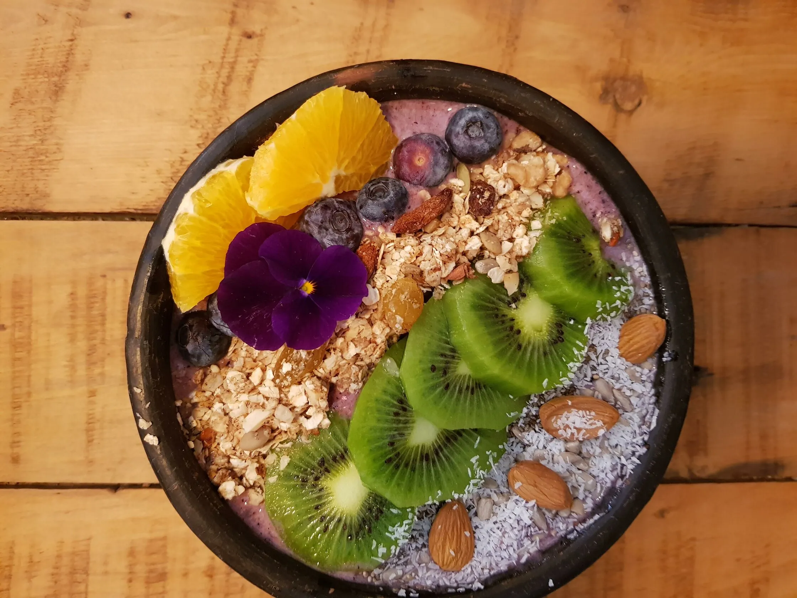

La responsabilidad al trabajar con y para la infancia es transversal. En el yoga infantil debemos permitir desarrollar conciencia en diversos aspectos y uno de ellos totalmente necesario, es el autocuidado mediante una alimentación saludable.
Ayudarles a comprender que tomar decisiones alimentarias con responsabilidad es un acto de amor propio, es también generar reflexiones en torno a la manera de nutrirse y a la forma en que queremos vivir. Nuestra alimentación habla del amor que tenemos por nuestro cuerpo, nuestra mente y nuestras emociones. El tomar consciencia de los alimentos que consumimos, es un camino de descubrimiento que invita a explorar y transformar.
La comprensión del autocuidado debe ser descubierta en nuestra infancia para así nutrir el camino. La consciencia sobre la alimentación permite valorarnos y valorar lo ancestral. Promover una cultura nutricional es sostener la sólida convicción de que lo que comemos ahora, determinará nuestro futuro. Es la alimentación una oportunidad para encontrarse consigo mismo/a, con la naturaleza, con el todo.
Los hábitos alimentarios deben ser promovidos por nosotros, los adultos.
¡La responsabilidad es nuestra! El Yoga infantil también es crear consciencia sobre la elección en la variedad y diversidad de alimentos que tenemos a nuestra disposición.
Por medio del yoga, podemos respetar en niños y niñas el derecho a la vida, el derecho a un desarrollo saludable y con conocimiento.
¿Cómo hacerlo en tus clases de Yoga?
Destinando una jornada o parte de ella para la preparación de una ensalada o brocheta de frutas, la cual idealmente debe ser preparada por ellos y ellas. Dependiendo de la edad, pueden pelar, cortar, limpiar, etc.
A partir de la postura del aŕbol, dialogar sobre qué tipos existen y qué frutos dan. Desde aquí, puedes pedirle que para un próximo encuentro traigan alimentos extraídos de árboles, tales como: manzana, naranja, limón, níspero, durazno, etc. Para finalizar se pueden preparar juegos de frutos para compartir.
Puedes planificar una clase para trabajar más a nivel sensorial, buscando estimular los sentidos del gusto, el olfato y el tacto. Para ello, dispones una serie de alimentos sobre una mesa: naranja trozada por la mitad, trozos de sandía, bastones de zanahoria y apio, medias lunas de manzana, cuadraditos de duraznos con y sin cáscaras, gajos de uva, tomates cherry, etc. Todo esto debe ir tapado para ser descubierto según turnos establecidos. Los niños y niñas, deben descubrir por medio del olfato, el tacto y el sabor qué alimentos tienen al frente, ya que estarán con sus ojos vendados.
Puedes fusionar el abordaje de la comida saludable y los mandalas, permitiendo la visualización de mandalas impresos y mandalas presentes en nuestros alimentos. Para esto, proporcionas alimentos en mitades, tales como: beterraga, naranja, limones, tomate, kiwi, choclo, pepino para que puedan ser observados y comparados con los mandalas entregados. Puedes finalizar pidiéndoles que elijan el alimento que más les gusta y confeccionen un mandala de aquella fruta o verdura.